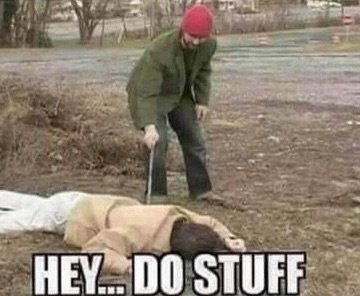

"He who thinks he is the doer is also the sufferer."
--Ramana
"As the mind sees things are getting done, it concludes that there must be a someone who does them, otherwise doing would not occur. But the vastness has never waited for the mind to recognize that there is no doer for doing to occur."
--Suzanne Segal
I work with a lot of people who struggle to get motivated.
Apparently there’s a whole lot of stuff not getting done out there.
There are taxes overdue, books not written, new businesses not launching. There’s de-cluttering not happening, exercise not happening, homework not done.
Leaving the house for chores is a big deal for some. And forget about phone calls- so much stalling instead of calling.
Pretty much everyone stalls about something.
We call this "Lack of Motivation."
As if it's missing. And as if motivation can be had, scored, grabbed, in quantity.
At will. Our will.
Like getting fistfuls of Halloween candy. We just have to reach out and grab.
Because we're supposed to earn the candy. We're supposed to do the hard work before we’re entitled to the rewards. We’re supposed to deserve good stuff.
And we don’t. We just sit there, undeserving.
If only we were more like other people and did things ahead of schedule and worked harder. Then we'd be entitled to reap our rewards.
So we push. Comparing, harassing, and hating on ourselves with visions of crappy consequences and wasted opportunities.
Turning to self-help books, hypnosis, affirmations and organizing plans and structure for accomplishing.
Trying – unsuccessfully- to force ourselves to Do.
Which all starts to mean something about who we are as a person.
Lazy. Useless. Dirty. A waste of space and life. Not a contributing member of society. Not living up to potential. Broken, wrong, bad.
Sitting on the couch defines us.
And it’s not a definition we like.
The thing is though, if we think about it, there's lots we want to do, lots we intend to do, lots we know would feel better once it got done.
We yearn to accomplish. We want to make things happen. We’re eager to get going.
Isn't that motivation?
Huh.
Motivation isn’t actually lacking. We’ve got plenty of it.
Yet we’re sitting on the couch anyway.
Maybe motivation is not what instigates action. Maybe motivation is actually unable to force anyone to get up and at 'em.
In fact, for some, poke too much and there’s more, not less, inclination to stay actionless. Just out of spite or fear.
How is it possible we haven't noticed that all the mean berating of ourselves, all the attempted inspiring with visions of an awful consequences, actually isn’t motivating at all?
Turns out, constant finger-stabbing produces the opposite of what we’re aiming for.
Turns out we don’t have a clue how to control our behavior and productivity.
Turns out we struggle for control because we don’t have any.
Doing is a happening that’s out of our hands.
Which of course seems outrageous to the inner voice that says, “Well I have to be in control! Otherwise Nothing Will Get Done!”
But it’s already not getting done. Even with the inner yelling at us.
That voice simply hasn’t noticed that it has no power. And that it simply has no clue what to do.
We’re not in charge of this.
No amount of motivation can give control we don’t have.
So what would it feel like if we could see that we’re a passenger, not the driver?
And that non-doing is not our doing?
What if none of this is our fault (despite what has been learned and ingrained?)
Well then, maybe then we can give ourselves a break.
Even if that seems opposite to what’s called for.
Because let’s face it, we don’t know what’s called for. We don’t know how to make ourselves the boss of motivation and action.
Luckily though, and perhaps shockingly, relaxing a responsibility we don’t really have anyway, can relax fear of lack and failure.
Which can relax constraints on action.
Getting ourselves out of the way just might allow action to be taken.
Things might just begin to get done.
Without us.
Allowing a Doer that does know how to get things done,
to do its job, unharassed.
What a relief.
And it could just be that
we deserve that gift.
Just for being alive.
Click here to watch Judy on Buddha at the Gas Pump
Click to watch Judy and Walter have fun chatting about about
nonduality, the self, consciousness, awareness, free will
and other light and breezy stuff
Judy And Robert Saltzman talk nonduality
and again: https://www.youtube.com/watch?v=7fv_vsvaejs
and again: https://www.youtube.com/watch?v=3DAn8Rqg3I0
"Who grows the oranges in the orange tree? Who grows the grass? Who takes care of the world and the earth? The same power that takes care of all the things on this planet.”
--Robert Adams
"From man’s perspective in this intricate game of love,
It is so easy to become confused and think you are the doer.
But from God’s infinite certainty,
He always Knows that He is the only one
Who should ever be put on trial."
--"Hafez"/ Daniel Ladinsky
